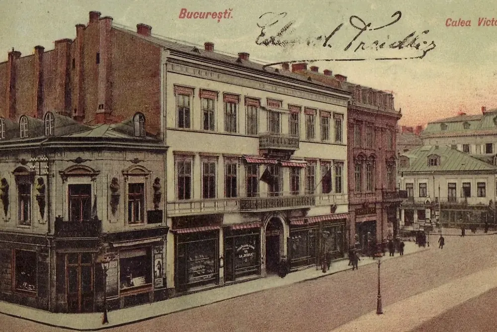
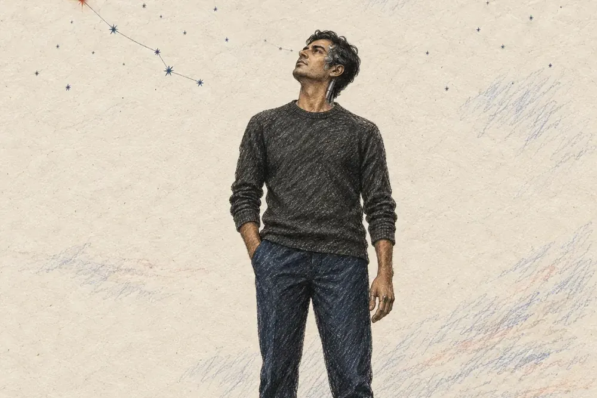

Media Projects
Three sites, built and published hereThree pieces of longer work, each built as its own site and published on this domain. Each one opens in a new tab.

HistoryEurope, Seen from the Edge
Europe needs a story to attach itself to. It is told here from the edge, through Romania, two centuries ago. (opens in a new tab)

PoetryThe Light Bringer
The Light Bringer and The Others: a diptych of poems, with the annotated reading alongside it. (opens in a new tab)
Fiction & PoetryFriday, Parallelism & Torments
Friday, Parallelism, and Torments: three illustrated works collected in one place. (opens in a new tab)